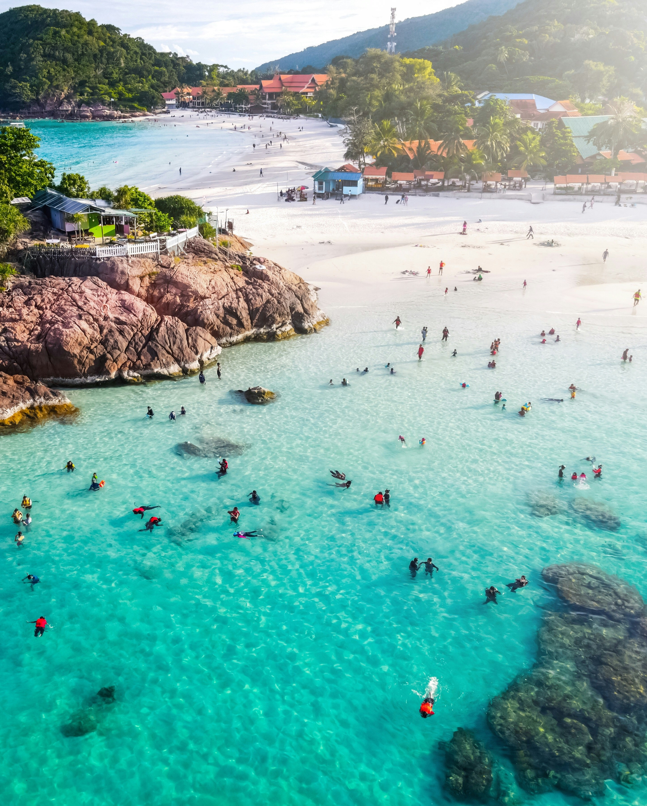
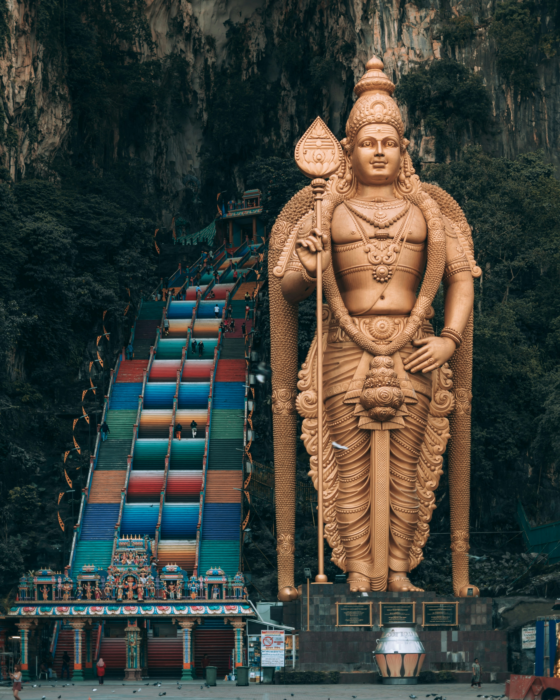
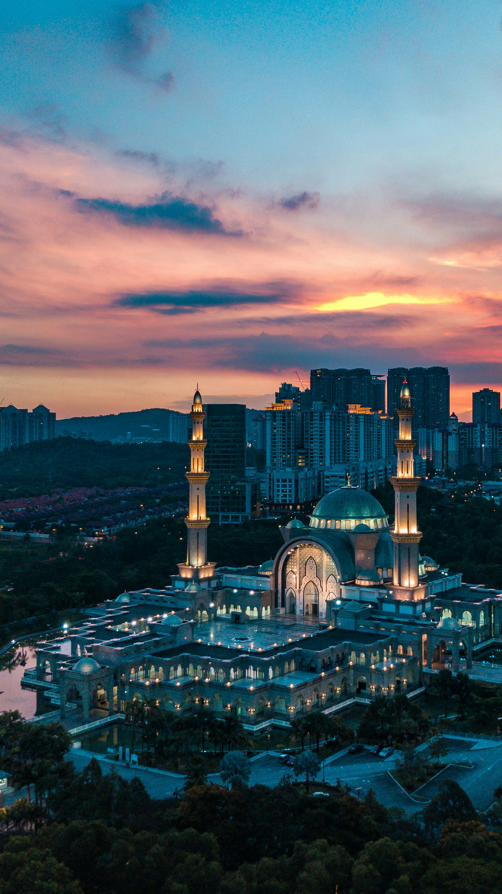
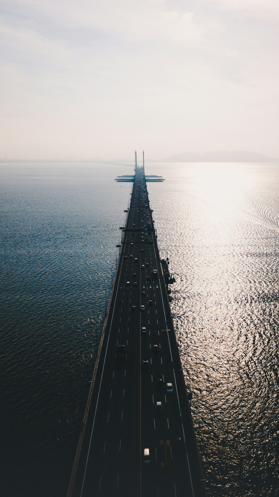
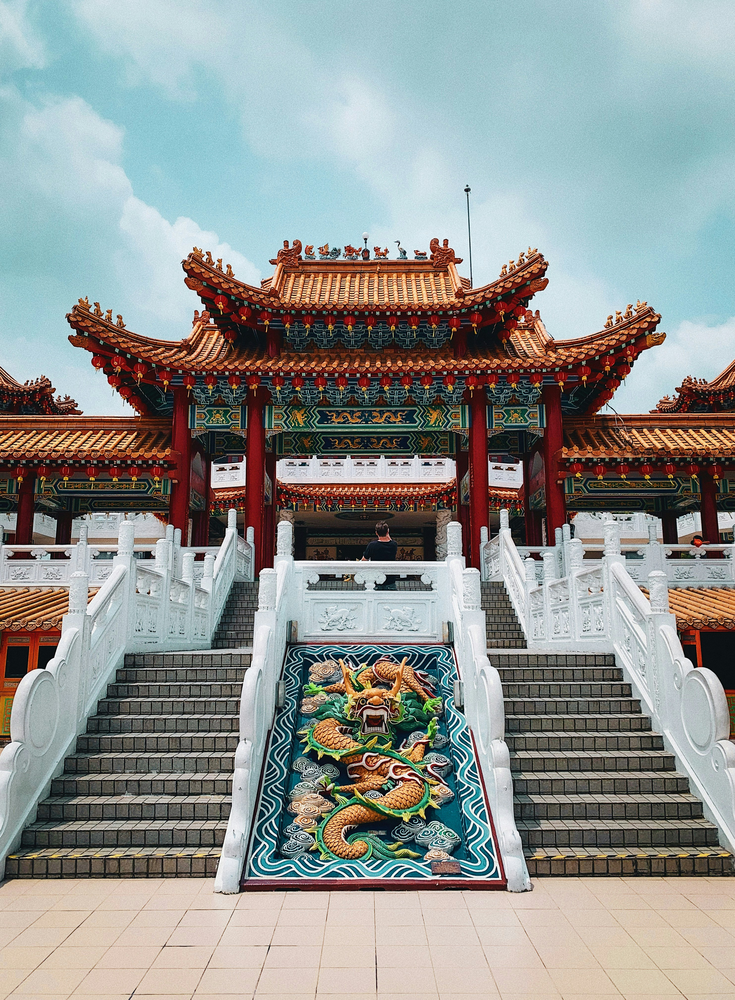
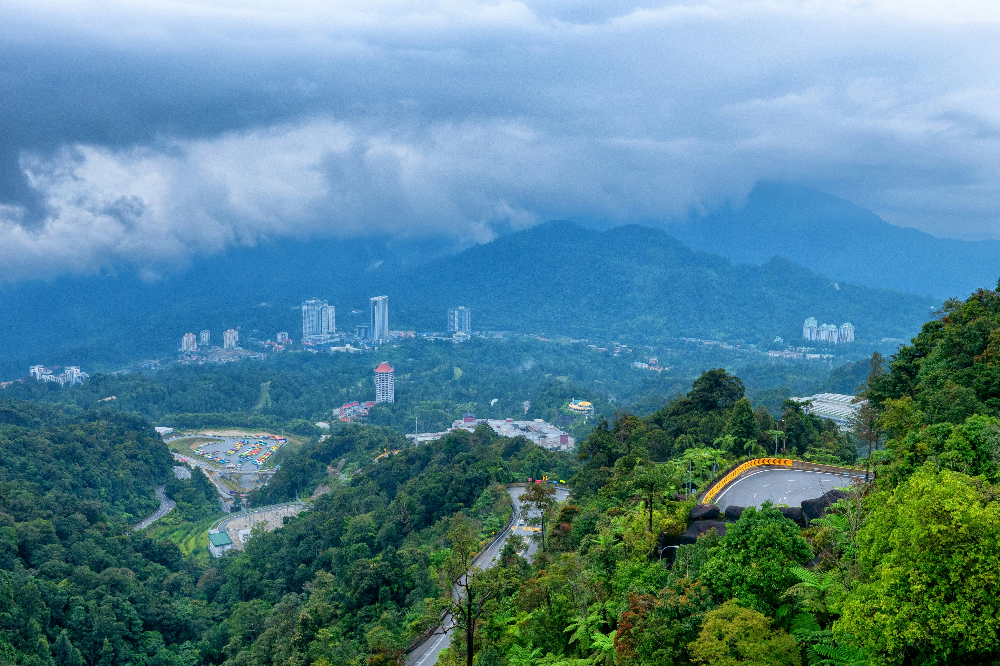

Malaysia is a vibrant kaleidoscope of cultures, landscapes, and experiences. In
this "Truly Asia" destination, ultra-modern skyscrapers stand in the shadow of 130-million-year-old rainforests,
and centuries-old colonial architecture blends seamlessly with futuristic urban design. Malaysia offers a unique
fusion where multicultural traditions thrive alongside rapid innovation, creating a travel experience that is as
diverse as it is welcoming.
1. Kuala Lumpur: The City of Shimmering Steel

Kuala Lumpur's skyline is dominated by the iconic Petronas Twin Towers, once the tallest
buildings in the world and still a magnificent symbol of Malaysia's modern ambition. These steel-and-glass
giants, inspired by Islamic geometric patterns, are connected by a skybridge that offers breathtaking views
of the urban sprawl. But beneath these futuristic towers, the city pulses with a rich, multi-layered
cultural energy. From the vibrant street food stalls of Jalan Alor and the luxury shopping malls of Bukit
Bintang to the tranquil greenery of the KL Forest Eco Park, Kuala Lumpur is a city of sharp contrasts. It is
a place where a colonial-era train station stands just minutes away from a high-tech skyscraper, reflecting
a nation that seamlessly blends its heritage with a drive toward the future.
2. Langkawi: An Archipelago of Legends

Langkawi is an emerald jewel set in the Andaman Sea, an archipelago of 99 islands that
feels like a world apart from the mainland. Designated as a UNESCO Global Geopark, it is a landscape defined
by ancient limestone formations, hidden mangroves, and pristine white-sand beaches. The Langkawi Sky Bridge,
suspended hundreds of meters above the jungle floor, provides a thrilling perspective on the islands' rugged
beauty. Beyond its natural wonders, Langkawi is steeped in local folklore and legends, such as the tale of
Mahsuri, which adds a mystical layer to its charm. Whether you are exploring the Kilim Karst Geoforest Park
by boat or simply relaxing at a luxury beachfront resort, Langkawi offers a profound sense of serenity and
connection to the natural world.
3. George Town, Penang: The Culinary Heartland

George Town, the capital of Penang, is a living museum and a UNESCO World Heritage site
that captures the multicultural soul of Malaysia. Its narrow streets are lined with beautifully preserved
British colonial buildings, ornate Chinese clan houses, and colorful Hindu temples. However, for many
visitors, the true heart of George Town is found in its legendary street food scene. Often called the food
capital of Southeast Asia, the city’s hawker centers serve an intoxicating blend of Malay, Chinese, and
Indian flavors. From the savory Char Kway Teow and spicy Laksa to the sweet Cendol, every meal is a journey
through Penang's diverse heritage. The city’s famous street art, which cleverly incorporates physical
objects like bicycles or chairs, adds a playful, modern touch to the historic atmosphere.
4. Cameron Highlands: The Emerald Tea Gardens

Located high above the tropical heat of the lowlands, the Cameron Highlands offer a cool,
misty retreat into a landscape of verdant rolling hills and tea plantations. This region was a favorite hill
station for British officials during the colonial era, and its Tudor-style architecture still imparts a
sense of old-world charm. Walking through the vast tea estates, such as the BOH Tea Center, visitors can
learn about the delicate process of tea production while enjoying panoramic views of the velvet-green
slopes. The highlands are also famous for their strawberry farms, flower nurseries, and the enchanting Mossy
Forest, where the trees are draped in thick layers of moss and lichen. It is a place of quiet beauty, where
the air is fresh and the pace of life slows down to match the gentle rustle of the tea leaves.
5. Malacca: A Tapestry of Colonial History

Malacca (Melaka) is a city where history is etched into every stone and facade. Once one
of the world’s most important trading ports, its strategic location attracted Portuguese, Dutch, and British
settlers, each of whom left an indelible mark on the city’s landscape. In the heart of Malacca lies the
Dutch Square, famous for its terracotta-red buildings like Christ Church and the Stadthuys. Nearby, the
ruins of St. Paul’s Hill and the A Famosa fort tell stories of battles and bygone empires. The Peranakan
culture, a unique fusion of Chinese and Malay heritage, is particularly vibrant here, reflected in the
ornate architecture and distinct cuisine of Jonker Street. Exploring Malacca’s riverfront at night, as the
historic buildings are illuminated and reflection dances on the water, is like stepping back in time.
6. Batu Caves: The Sacred Limestone Cathedral

Just outside Kuala Lumpur, the Batu Caves represent one of Malaysia’s most significant
religious and natural landmarks. This massive limestone outcropping is home to several Hindu temples and
shrines, the most famous being the Cathedral Cave. Guarding the entrance is a colossal, 42-meter-tall golden
statue of Lord Murugan, one of the tallest of its kind in the world. To reach the main cave, visitors must
climb 272 steps, which were recently painted in a vibrant rainbow of colors, creating a stunning visual
display. Inside, the limestone caverns are vast and awe-inspiring, with sunlight filtering through cracks in
the high ceiling to illuminate the intricate Hindu art. During the annual Thaipusam festival, millions of
devotees gather here, making the Batu Caves a place of intense spiritual energy and cultural spectacle.
7. Mount Kinabalu: Borneo’s Granite Giant

Standing majestically in the East Malaysian state of Sabah, Mount Kinabalu is the highest
peak between the Himalayas and New Guinea. This granite giant is more than just a mountain; it is a sacred
site for the local Kadazan-Dusun people and the centerpiece of Kinabalu Park, Malaysia’s first UNESCO World
Heritage site. The climb to the summit, Low’s Peak, is a rigorous but rewarding adventure that takes hikers
through a diverse range of ecosystems, from tropical rainforests and oak forests to the stark, alpine rock
formations near the top. The mountain is world-renowned for its biodiversity, home to thousands of plant
species, including the giant Rafflesia and unique carnivorous pitcher plants. Reaching the summit at
sunrise, as the clouds drift below and the first light hits the jagged peaks, is a truly transformative
experience.
8. Sipadan Island: An Underwater Paradise

For those who seek beauty beneath the waves, Sipadan Island remains one of the world’s
legendary diving destinations. Located off the coast of Borneo in the Celebes Sea, it is Malayia’s only
oceanic island, arising 600 meters from the seabed on a volcanic column. The nutrient-rich currents attract
an incredible abundance of marine life, from massive schools of barracuda and jackfish to hawksbill turtles
and reef sharks. The coral reefs here are exceptionally healthy and vibrant, providing a kaleidoscope of
colors for divers to explore. Due to its status as a protected marine park, visitor numbers are strictly
controlled to preserve the delicate ecosystem. For those lucky enough to visit, Sipadan offers an immersive
experience into a pristine underwater world that feels like an untouched garden of the sea.
The Endless Discovery of Malaysia: Malaysia is a
country that surprises and delights at every turn. Its remarkable diversity ensures that every traveler finds
their own piece of paradise, whether in the heights of the city or the depths of the jungle. Discover the
vibrant spirit of Malaysia for yourself. Selamat Datang!
The Signature of Excellence
Why Choose Luxe Voyages?
Curated Excellence
Every destination and accommodation is hand-selected to meet the
highest standards of luxury.
Direct Booking
Book directly with verified premium providers to ensure the best rates
and exclusive perks.
Global Legacy
Our worldwide presence ensures you have premium support wherever your
journey takes you.
Guest Experiences
From Our Global Travelers
"Luxe Voyages didn't just book a trip; they crafted an unforgettable experience. Every detail
was handled with unparalleled professionalism."
Julian Montgomery
Verified
Global
Traveler